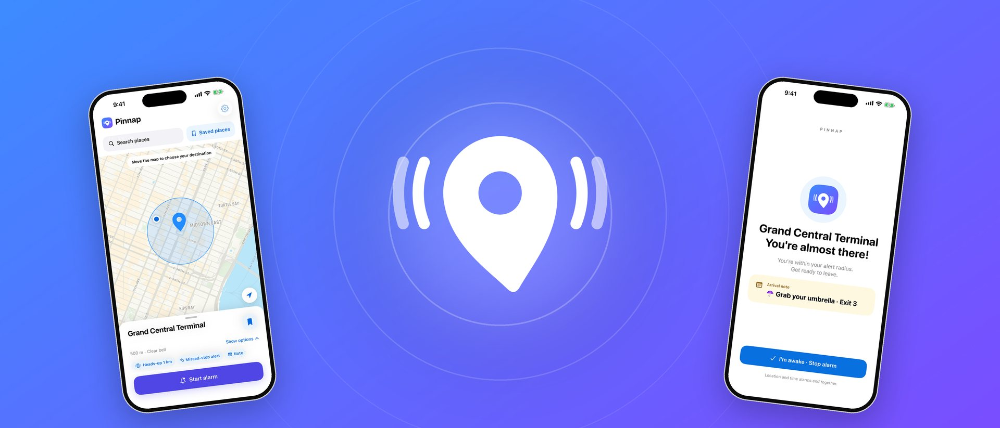
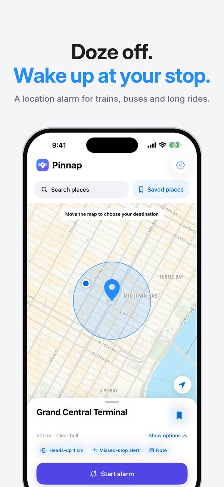
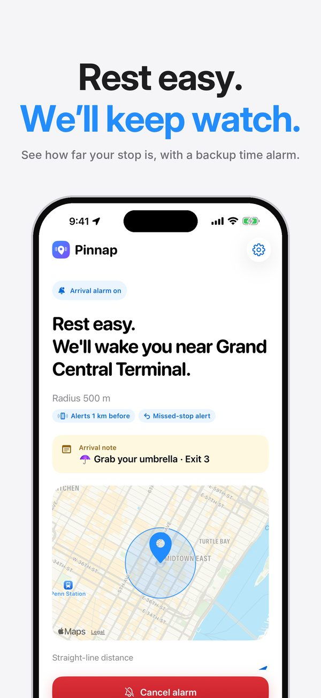
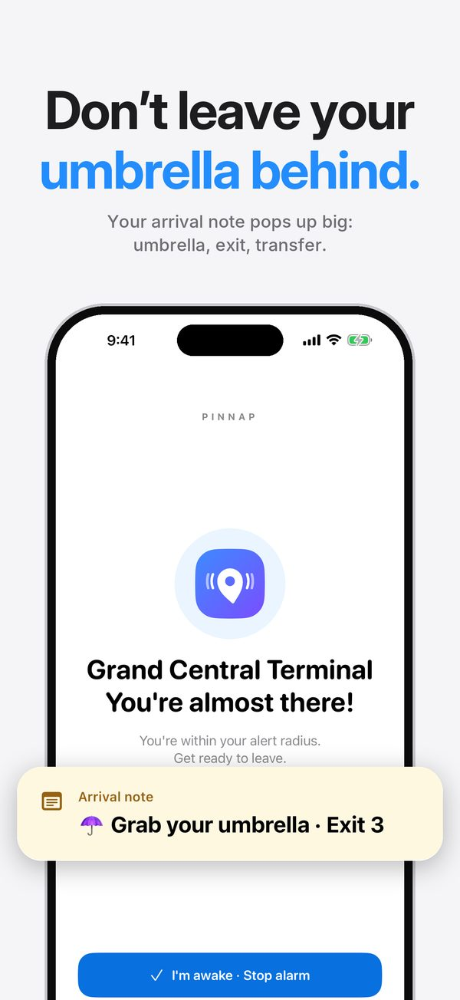
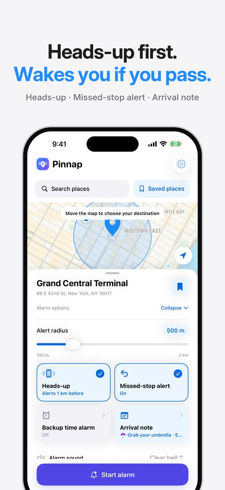
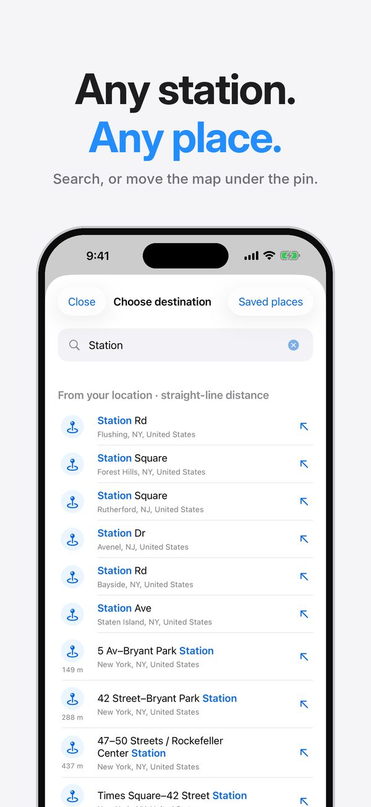
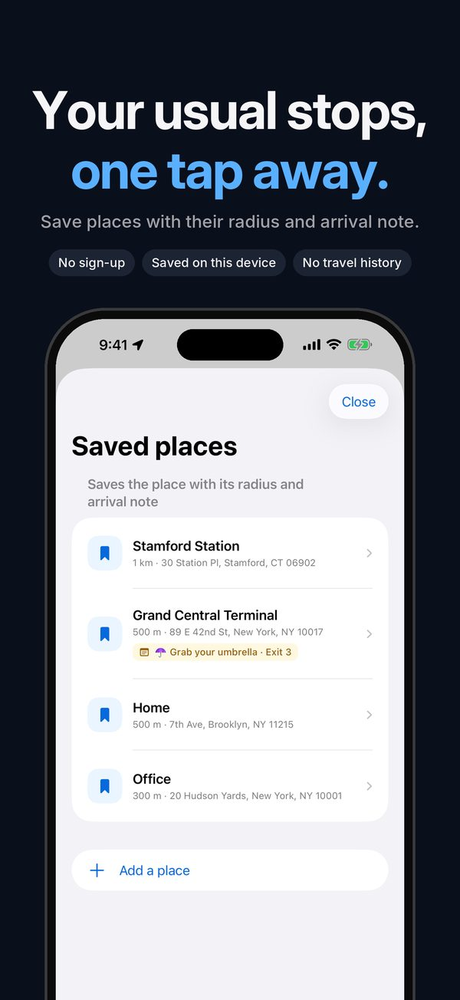

Pinnap: Arrival Alarm for iPhone
Doze off on the subway, bus or train without missing your stop. Drop a pin where you get off, and Pinnap wakes you with a real alarm as you get close — even in silent mode.
Get Pinnap on the App StoreFree. iPhone, iOS 26 or later.







An arrival alarm that actually wakes you
Pin it on the map
Move the map under the pin or search for a station or place. Choose an alert radius from 100 m to 2 km.
Rings in silent mode
An iPhone system alarm goes off when you enter the radius. Turn it off right from the Lock Screen.
Heads-up before you arrive
A gentle notification a little before your stop, so you have time to get ready.
Missed-stop alert
If you pass your stop and keep moving away, Pinnap lets you know right away.
Arrival memo
Leave yourself a note like “Grab your umbrella · Exit 3”. It shows up when you arrive.
Backup time alarm
Worried about tunnels or underground lines? Add an alarm at a set time as a safety net.
Your location stays on your iPhone
Pinnap measures the distance to your stop on your iPhone. There is no account and no server that receives your location. Location is checked only while an alarm is on — rarely while you are far away, more precisely as you get close — and stops as soon as the alarm ends.
Free
Pinnap is free and shows ads: a banner at the bottom of the screen and an ad right after you turn an alarm off. No ads appear while an alarm is ringing.
Questions
Does the alarm ring in silent mode?
Yes. Pinnap uses the iPhone system alarm, so it rings even when your iPhone is in silent mode, and you can turn it off from the Lock Screen.
How does Pinnap decide that I have arrived?
It checks whether you are inside the radius you set around your destination, using straight-line distance. It does not predict routes or timetables.
What if I lose GPS in a tunnel or underground?
Use a generous radius and add a backup time alarm. It rings at the time you choose even if the location update is late.
Can I start an alarm when I'm already at my stop?
No. If you are already inside the radius, Pinnap asks you to move the destination or make the radius smaller, so the alarm never rings by mistake.